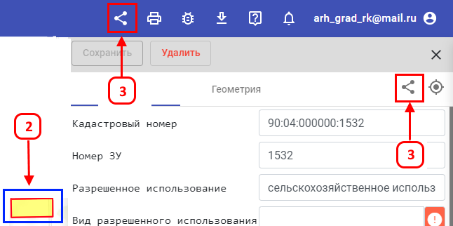

Для копирования ссылки на объект требуется:
-
На верхней панели кликнуть ЛКМ на значок(1) «Копировать ссылку на объект».
-
При выборе нужного объекта на карте и открытии его атрибутов(2), необходимо нажать ЛКМ на значок(1) «Копировать
ссылку на объект»(3). После этого URL, будет скопирован в буфер обмена. При переходе по скопированной ссылке будет
открываться данный проект с выделенным объектом на карте и открытой атрибутивной таблицей.
